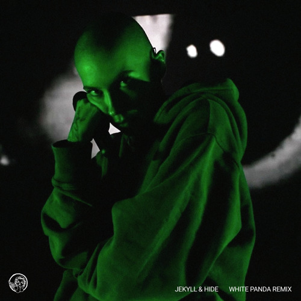
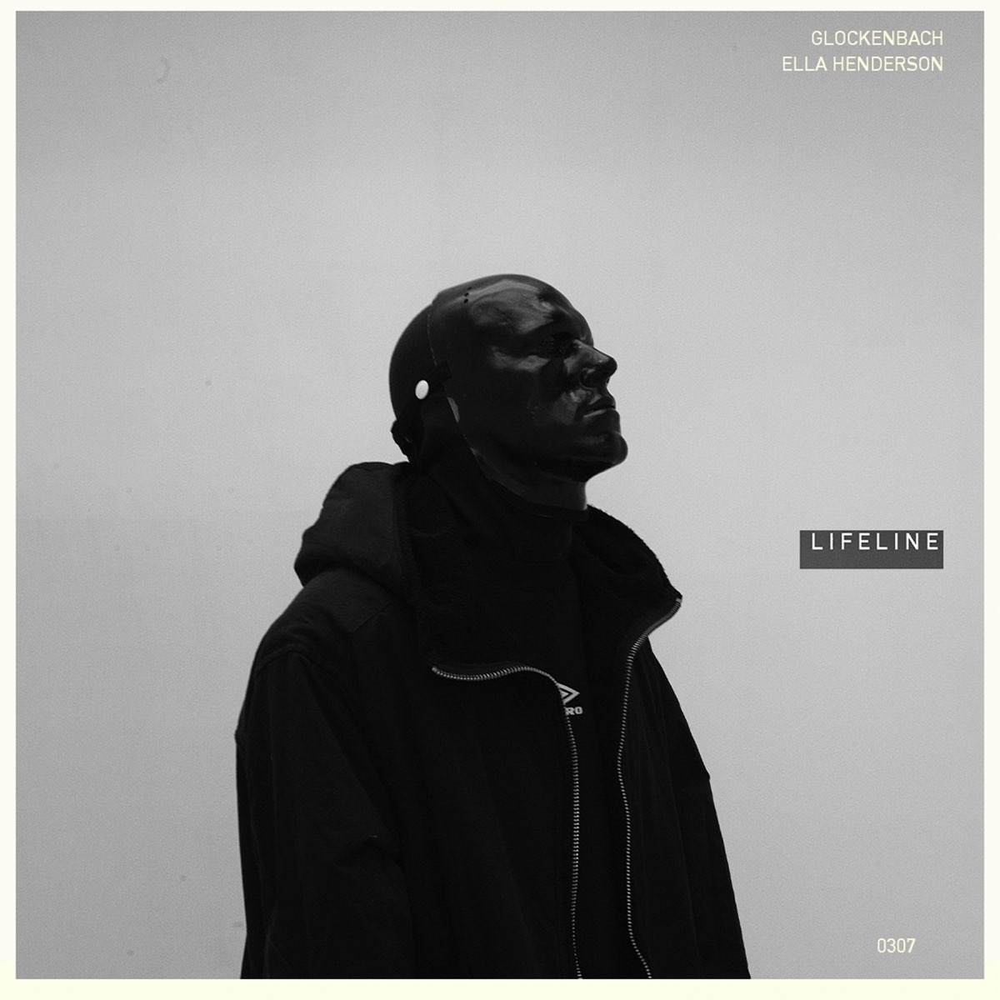
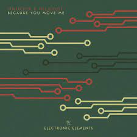

- پلی لیست های من
- W.D.R.O / WEB-DEVELOPER-REZA-OJAGHI
reza ojaghi
ایران
دیدن همه
یادم نرفته
هورش بند
اون روزا رو میخوام
سیروان خسروی
گل نازم(دلی)
رضا بهرام
عاشقت میشم
میلاد بابایی
دلم میخواد
پازل باند
حرف اخر
امین بانی
بچه نشو
حسین منتظری
تو تکی
سینا درخشنده
کمان ابرو
حجت اشرف زاده
یه روز
گرشا رضایی
جهان
دیدن همه
vaybe - mahmut orhan remix
kenan dogulu
still (i got summer on my mind)
liufo , jkrs , bad sin
batmayel aala el beat
elissa

jekyll & hide-white panda remix
bisghop briggs , white panda
get lucky (slowed and reverb)
pharrell williams , daft punk , nile rodgers

lifeline (feat.ella henderson)
glockenbach , ella henderson

because you move me
tinlicker , helsloot
dream about you
roudeep
friends with the night( feat. jocelyn alice)
manse , svnsets , jocelyn alice
Strangers (feat. Linney)
young bombs ,linney
متن آهنگ
هم زمان
یادم نرفته
هورش بند